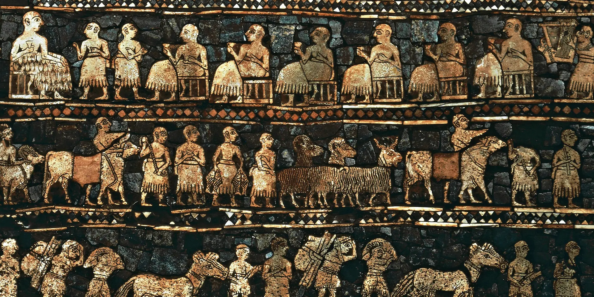

Sumer was an ancient civilization founded in the Mesopotamia region of the Fertile Crescent situated between the Tigris and Euphrates rivers. Known for their innovations in language, governance, architecture and more, Sumerians are considered the creators of civilization as modern humans understand it. Their control of the region lasted for short of 2,000 years before the Babylonians took charge in 2004 B.C.
Sumer was first settled by humans from 4500 to 4000 B.C., though it is probable that some settlers arrived much earlier.
This early population—known as the Ubaid people—was notable for strides in the development of civilization such as farming and raising cattle, weaving textiles, working with carpentry and pottery and even enjoying beer. Villages and towns were built around Ubaid farming communities.
The people known as Sumerians were in control of the area by 3000 B.C. Their culture was comprised of a group of city-states, including Eridu, Nippur, Lagash, Kish, Ur and the very first true city, Uruk. At its peak around 2800 BC, the city had a population between 40,000 and 80,000 people living between its six miles of defensive walls, making it a contender for the largest city in the world.
Each city-state of Sumer was surrounded by a wall, with villages settled just outside and distinguished by the worship of local deities.
The Sumerian language is the oldest linguistic record. It first appeared in archaeological records around 3100 B.C. and dominated Mesopotamia for the next thousand years. It was mostly replaced by Akkadian around 2000 B.C. but held on as a written language in cuneiform for another 2,000 years.
Cuneiform, which is used in pictographic tablets, appeared as far back as 4000 B.C., but was later adapted into Akkadian, and expanded even further outside of Mesopotamia beginning in 3000 B.C.
Writing remains one of the most important cultural achievements of the Sumerians, allowing for meticulous record keeping from rulers down to farmers and ranchers. The oldest written laws date back to 2400 B.C. in the city of Ebla, where the Code of Er-Nammu was written on tablets.
The Sumerians were considered to have a rich body of literary works, though only fragments of these documents exist.
Architecture on a grand scale is generally credited to have begun under the Sumerians, with religious structures dating back to 3400 B.C., although it appears that the basics of the structures began in the Ubaid period as far back as 5200 B.C. and were improved upon through the centuries. Homes were made from mud bricks or bundled marsh reeds. The buildings are noted for their arched doorways and flat roofs.
Elaborate construction, such as terra cotta ornamentation with bronze accents, complicated mosaics, imposing brick columns and sophisticated mural paintings all reveal the society’s technical sophistication.
Sculpture was used mainly to adorn temples and offer some of the earliest examples of human artists seeking to achieve some form of naturalism in their figures. Facing a scarcity of stone, Sumerians made leaps in metal-casting for their sculpture work, though relief carving in stone was a popular art form.
Under the Akkadian dynasty, sculpture reached new heights, as evidenced by intricate and stylized work in diorite dated to 2100 B.C.
Ziggurats began to appear around 2200 B.C. These impressive pyramid-like, stepped temples, which were either square or rectangular, featured no inner chambers and stood about 170 feet high. Ziggurats often featured sloping sides and terraces with gardens. The Hanging Gardens of Babylon was one of these.
Palaces also reach a new level of grandiosity. In Mari around 1779 B.C., an ambitious 200-room palace was constructed.
Schools were common in Sumerian culture, marking the world's first mass effort to pass along knowledge in order to keep a society running and building on itself.
Sumerians left behind scores of written records, but they are more renowned for their epic poetry, which influenced later works in Greece and Rome and sections of the Bible, most notably the story of the Great Flood, the Garden of Eden, and the Tower of Babel. The Sumerians were musically inclined and a Sumerian hymn, “Hurrian Hymn No. 6,” is considered the world’s oldest musically notated song.
In 2004 B.C., the Elamites stormed Ur and took control. At the same time, Amorites had begun overtaking the Sumerian population.
The ruling Elamites were eventually absorbed into Amorite culture, becoming the Babylonians and marking the end of the Sumerians as a distinct body from the rest of Mesopotamia.